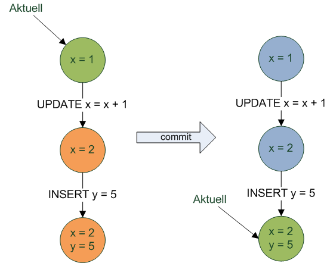
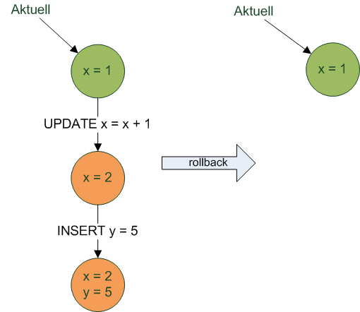
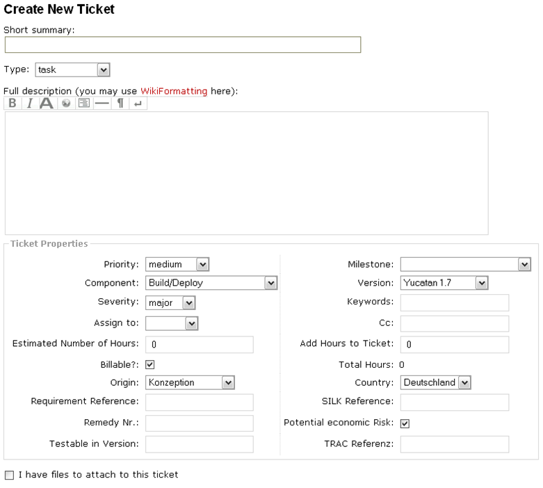
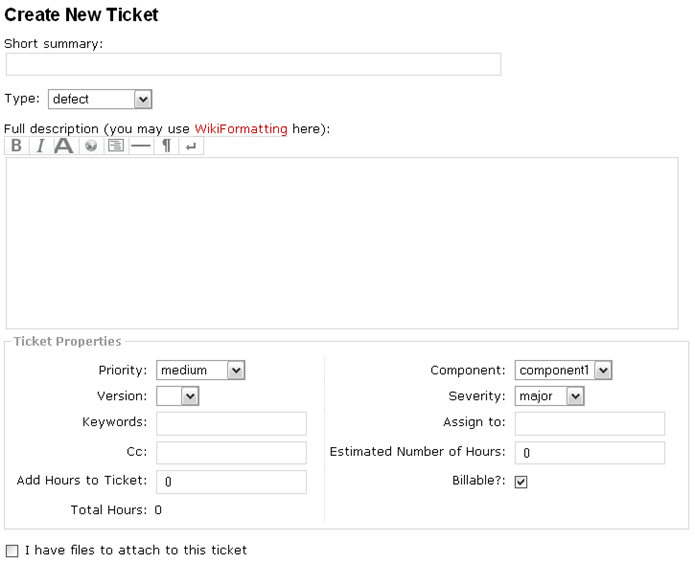
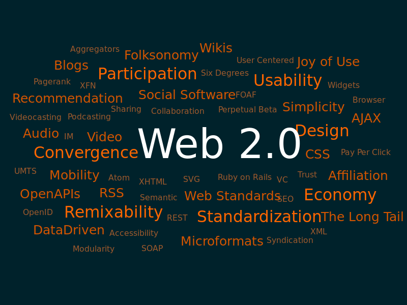
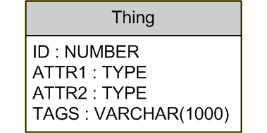
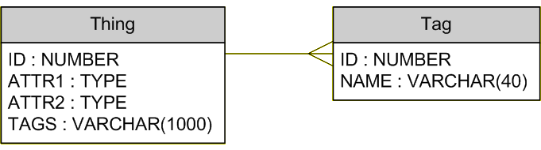
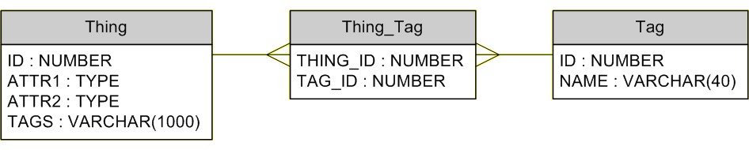

Non-Relational Databases
NoSQL, NewSQL, CAP and other acronyms
Created by Christian Köberl, May 2013
Intro
1960s
Hierarchical and network databases
1966 - IBM IMS
1970s
1970 - Edgar F. Codd: A Relational Model of Data for Large Shared Data Banks
1977 - IBM System R -> SQL
1979 - Oracle
1980s
Mid 80s: Rise of the RDMS and SQL
1986 - BerkeleyDB - key/value
1989 - Lotus Notes/Domino - document oriented
2000 and Beyond
Rise of NoSQL
2000 - Neo4j - graph database
2003 - Memcached - most used key/value cache
2005 - CouchDB
2006 - Google BigTable paper
Current Trends
Cloud
Big Data
Connectivity
Variety
Relational Databases
Why Relational?
- Structured data
- Separation of application and data
- Multiple application using the same database
- Standard (SQL)
- Tools
- People (education)
A tomicity
C onsistency
I solation
D urability
Transaction Isolation
| Dirty | Non-repeatable reads | Phantom reads | |
|---|---|---|---|
| Read uncommited | may occur | may occur | may occur |
| Read commited | - | may occur | may occur |
| Repeatable read | - | - | may occur |
| Serializable | - | - | - |
MVVC
 Problems With Relational Databases

Custom Fields


Tags, Network Structure
Relational Solution (1)
Relational Solution (2)
Relational Solution (3)
Query For Things With Tag 'Java'
SELECT *
FROM Thing
JOIN Thing_Tag
ON Thing.Id = Thing_Tag.Thing_Id
JOIN Tag
ON Tag.Id = Thing_Tag.Tag_Id
WHERE Tag.Tag = 'Java'Query For Tags 'Java' And 'SQL'
SELECT *
FROM Thing
JOIN Thing_Tag tt1
ON Thing.Id = tt1.Thing_Id
JOIN Thing_Tag tt2
ON Thing.Id = tt2.Thing_Id
JOIN Tag tag1
ON tag1.Id = tt1.Tag_Id
JOIN Tag tag2
ON tag2.Id = tt2.Tag_Id
WHERE tt1.Tag = 'Java' AND tt2.Tag = 'SQL'Query For Tags 'Java' Or 'SQL'
SELECT *
FROM Thing
JOIN Thing_Tag
ON Thing.Id = Thing_Tag.Thing_Id
JOIN Tag
ON Tag.Id = Thing_Tag.Tag_Id
WHERE Tag.Tag = 'Java' AND Tag.Tag = 'SQL'Query For Tag 'Java' But Not 'SQL'
SELECT *
FROM Thing
JOIN Thing_Tag
ON Thing.Id = Thing_Tag.Thing_Id
JOIN Tag
ON Tag.Id = Thing_Tag.Tag_Id
WHERE Tag.Tag = 'Java'
AND NOT EXISTS
(SELECT 1
FROM Thing_Tag
JOIN Tag
ON Tag.Id = Thing_Tag.Tag_Id
WHERE Thing_Tag.Thing_Id = Thing.Id
AND Tag.Tag = 'SQL')Same Queries With Lucene (Solr)
- Tag 'Java':
tag:Java - Tag 'Java' and 'SQL':
tag:Java AND tag:SQL - Tag 'Java' or 'SQL':
tag:Java OR tag:SQL - Tag 'Java' but not 'SQL':
tag:Java -tag:SQL
CAP
or the problem with ACID
CAP Theorem
It is impossible in the asynchronous network model to implement a read/write data object that guarantees the following properties:
- Availability
- Atomic consistency
in all fair executions (including those in which messages are lost).
Consistency
all nodes see the same data at the same time
Availability
guarantee that every request receives a response about whether it was successful or failed
Partition Tolerance
the system continues to operate despite arbitrary message loss or failure of part of the system
NoSQL Databases
Key/Value
Document
BigTable
Graph
THX
Questions?
Sources
- Wikipedia: Database management systems
- A Brief History of NoSQL
- Lorenzo Alberton: NoSQL Databases: Why, what and when http://ontwik.com/php/nosql-databases-what-why-and-when-lorenzo-alberton/
- Presentation powered by reveal.js